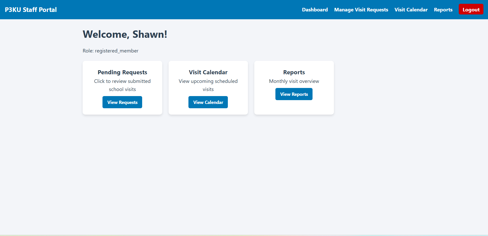

Developed a comprehensive accommodation booking system using PHP and MySQL,
enabling users to search,
book, and manage accommodations seamlessly.
Implemented user
authentication, booking management, and payment processing features to enhance user
experience.

Software application used to manage and organize a library’s daily operations.
It helps librarians keep track of books, members, borrowing and returning records,
and fines efficiently. By automating these tasks, the system reduces manual work,
minimizes errors, and makes it easier for users to search for books and manage library resources.

Created a personal portfolio website using HTML, CSS, and JavaScript to showcase my skills.

Redesigned the Campus Central website to improve user experience and accessibility.
Developed a website for P3KU using HTML, CSS, and JavaScript to provide information about their services and initiatives.